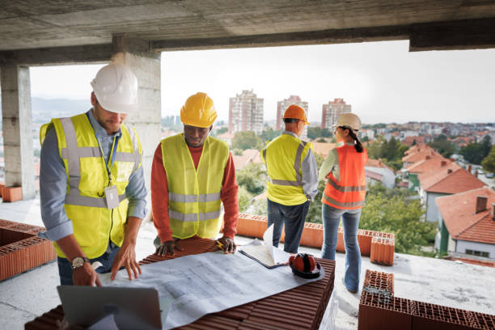
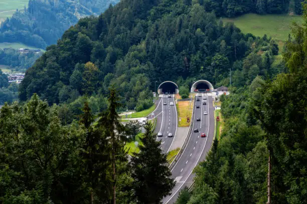
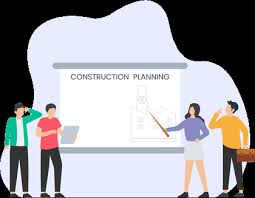
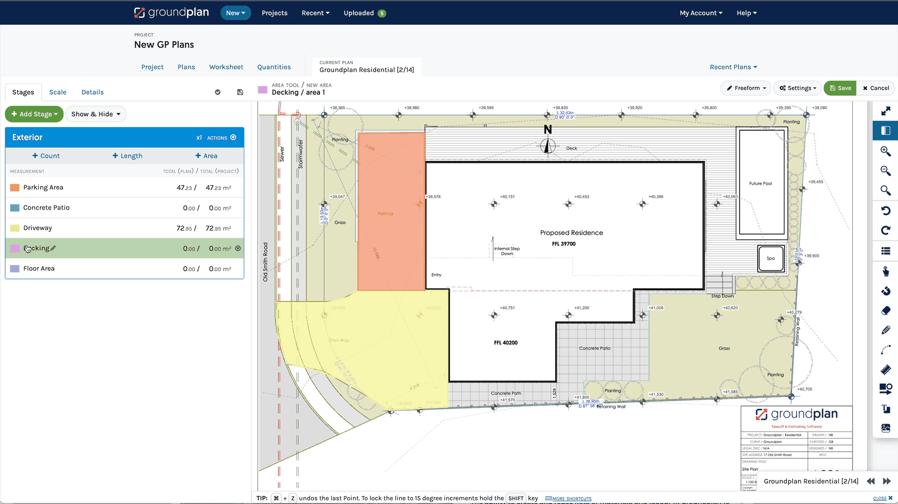
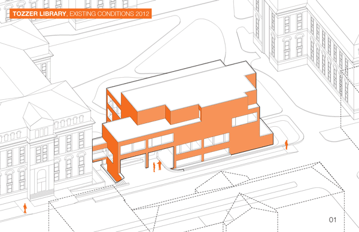

A CIVIL ENGINEERING OVERVIEW
Exploring the fundamentals of modern civil construction and infrastructure.
Introduction
Civil engineering is a fundamental discipline that plays a vital role in shaping the infrastructure of our society. It involves the design, construction, and maintenance of essential structures such as buildings, bridges, roads, dams, and water supply systems.This field combines creativity, technical knowledge, and practical skills to solve complex challenges related to urban development and environmental sustainability. Civil engineers work to ensure that the infrastructure is safe, efficient, and durable, ultimately improving the quality of life for communities around the world. Through careful planning and innovative solutions, civil engineering continues to build the foundation for modern living and future growth.

Major Fields

Civil engineering covers a wide range of specialized fields that contribute to building and maintaining infrastructure.
Each field plays a crucial role in the development of modern cities and rural areas, ensuring safety, functionality, and sustainability.
- 🛣️ Roads
- 🌉 Bridges
- 🏢 Buildings
- 🏞️ Dams
- 🚇 Tunnels
- 🏗️ Foundations
🛣️ Roads

Roads are one of the most essential components of civil infrastructure. They connect cities, towns, and rural areas, enabling the efficient movement of people and goods. The construction of roads involves careful planning, surveying, designing of layers (like subgrade and pavement), and ensuring proper drainage systems. Well-constructed roads improve economic activity, reduce travel time, and enhance public safety by providing smooth and reliable transportation networks.
🌉 Bridges

Bridges play a vital role in connecting regions divided by natural or manmade obstacles such as rivers, valleys, or roads. Civil engineers design bridges with strong materials and smart structures to ensure stability, durability, and safety. From small pedestrian bridges to massive cable-stayed or suspension bridges, each type requires careful consideration of load-bearing capacity, weather conditions, and aesthetics. Bridges not only improve connectivity but also symbolize engineering excellence.
🏢 Buildings

Buildings form the backbone of residential, commercial, and institutional spaces. Civil engineers and architects work together to design structures that are safe, functional, and energy-efficient. Building construction includes planning layouts, designing structural frameworks, choosing suitable materials, and ensuring safety standards. From houses and schools to skyscrapers and hospitals, buildings reflect both cultural identity and engineering innovation.
🏞️ Dams

Dams are massive structures built to control water flow for irrigation, electricity generation, flood control, and water storage. They require precise geological surveys, strong foundations, and high-strength construction materials to withstand immense pressure. Dams play a crucial role in water management, especially in agriculture and hydropower production, while also supporting ecosystem balance in many regions.
🚇 Tunnels

Tunnels provide underground pathways for roads, trains, or utilities, especially in mountainous or densely populated urban areas. Constructing tunnels involves advanced techniques like boring, lining, and ventilation system design. They improve transportation efficiency and reduce surface congestion, contributing to smarter infrastructure solutions.
🏗️ Foundations

Foundations are the most critical part of any structure, as they bear the entire load of the building and transfer it safely to the ground. A well-designed foundation ensures the stability, strength, and longevity of a structure by preventing settlement, tilting, or collapse. Civil engineers assess soil conditions, environmental factors, and load requirements to choose the appropriate type of foundation—whether shallow or deep. Proper foundation design is essential for maintaining the safety and durability of buildings, especially in areas prone to earthquakes or waterlogging.
Constructor Process
It starts with identifying the project requirements, followed by creating technical designs, executing physical construction on-site, and finishing with interior work and quality inspections. This process ensures that structures are safe, durable, and built according to specifications and standards.
There are some steps of Constructing Process
🔢 Step 1: Planning
🔢 Step 2: Designing
🔢 Step 3: Execution
🔢 Step 4: Finishing
🔢 Step 1: Planning 📋

This is the first step where goals, materials, budget, and timeline are decided.A detailed site analysis and requirement gathering is done.
🔢 Step 2: Designing 🏗️

In this phase, architects and engineers prepare technical drawings and models.It includes structure layout, dimensions, and safety planning.
🔢 Step 3: Execution 🧱

Construction begins! Material is delivered, foundation is built, walls and roofs are constructed. Safety rules are followed strictly.
🔢 Step 4: Finishing 🎨

In the final step, painting, flooring, fittings, and interior work is completed. Final inspections and approvals are done before handover.
Final Overview
To conclude this project, the following video provides a comprehensive overview of the civil construction process.
It highlights key stages such as planning, designing, execution, and finishing, along with real-world visuals of
workers, machinery, and site activities. This video helps reinforce the concepts discussed above and shows how
civil engineers turn ideas into reality.